–í—Å–µ–ª–µ–Ω–Ω–∞—è Digital Humanities
–ß–µ–º –∑–∞–Ω–∏–º–∞—é—Ç—Å—è —Ü–∏—Ñ—Ä–æ–≤—ã–µ –≥—É–º–∞–Ω–∏—Ç–∞—Ä–∏–∏
–ú–µ–Ω—è –∑–æ–≤—É—Ç –î–∞–Ω—è, —ç—Ç–æ —è:

–ö—Ç–æ —è —Ç–∞–∫–æ–π
- –ö–æ–º–ø—å—é—Ç–µ—Ä–Ω—ã–π –ª–∏–Ω–≥–≤–∏—Å—Ç (—É–º–µ—é –≤ Natural Language Processing)
- –û–∫–æ–Ω—á–∏–ª –∫–æ–º–ø–ª–∏–Ω–≥–≤–∏—Å—Ç–∏–∫—É –≤ –í—ã—à–∫–µ
- –î–µ–ª–∞–ª –∏–∑–≤–ª–µ—á–µ–Ω–∏–µ –∏–Ω—Ñ–æ—Ä–º–∞—Ü–∏–∏ –∏–∑ —Ç–µ–∫—Å—Ç–æ–≤ –≤ ABBYY
- –¶–∏—Ñ—Ä–æ–≤–æ–π –ª–∏—Ç–µ—Ä–∞—Ç—É—Ä–æ–≤–µ–¥
- Диссертация по цифровым подходам к исследованию «Войны и мира»
- –°–æ-–æ—Å–Ω–æ–≤–∞—Ç–µ–ª—å –ø—Ä–æ–µ–∫—Ç–∞ dracor.org
- –ü—Ä–æ–≥—Ä–∞–º–º–∏—Ä—É—é—â–∏–π –≥—É–º–∞–Ω–∏—Ç–∞—Ä–∏–π
- –ó–∞–ø—É—Å—Ç–∏–ª –º–∞–≥–∏—Å—Ç—Ä–∞—Ç—É—Ä—É –ø–æ Digital Humanities –≤ –í—ã—à–∫–µ
Я и «цифровое гуманитарное»:
 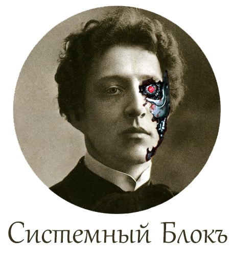
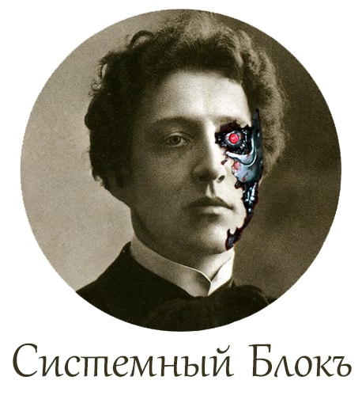
Digital Humanities
или …Digital Humanities — о том
…что могут информационные технологии в
- —Ñ–∏–ª–æ–ª–æ–≥–∏–∏ (–ª–∏—Ç–µ—Ä–∞—Ç—É—Ä–æ–≤–µ–¥–µ–Ω–∏–∏)
- –∫—É–ª—å—Ç—É—Ä–æ–ª–æ–≥–∏–∏
- –∏—Å—Ç–æ—Ä–∏—á–µ—Å–∫–æ–π –Ω–∞—É–∫–µ
- ...–¥–∞–ª–µ–µ –≤–µ–∑–¥–µ!
–ö–∞—Ä—Ç–∞ Digital Humanities

Digital Humanities –∫–∞–∫ —Å—É–º–º–∞ –º–∞—Ä–≥–∏–Ω–∞–ª–∏–π
Итак, Digital Humanities — о том
…что могут информационные технологии в
- —Ñ–∏–ª–æ–ª–æ–≥–∏–∏ (–ª–∏—Ç–µ—Ä–∞—Ç—É—Ä–æ–≤–µ–¥–µ–Ω–∏–∏)
- –∫—É–ª—å—Ç—É—Ä–æ–ª–æ–≥–∏–∏
- –∏—Å—Ç–æ—Ä–∏—á–µ—Å–∫–æ–π –Ω–∞—É–∫–µ
- ...–¥–∞–ª–µ–µ –≤–µ–∑–¥–µ!
–¢–∞–∫–∏–µ –∂–µ –æ–ø—Ä–µ–¥–µ–ª–µ–Ω–∏—è Digital Humanities –¥–∞—é—Ç —Å–∞–º–∏ —Ü–∏—Ñ—Ä–æ–≤—ã–µ –≥—É–º–∞–Ω–∏—Ç–∞—Ä–∏–∏:
Using computational tools to do the work of the humanities
The use of digital tools and methods in humanities study and dissemination.
DH is inquiry enabled by digital methodologies or modes of research, dissemination, design, preservation, and communication that rely on algorithms, software, and/or the Internet network for processing data.
–í —ç—Ç–æ–º –∂–µ –¥—É—Ö–µ –æ–ø—Ä–µ–¥–µ–ª–µ–Ω–∏–µ –∏–∑ –í–∏–∫–∏–ø–µ–¥–∏–∏:
Digital humanities (DH) is an area of scholarly activity at the intersection of computing or digital technologies and the disciplines of the humanities.
Но никто же не говорит про «цифровую физику»?

–í –≥—É–º–∞–Ω–∏—Ç–∞—Ä–Ω—ã—Ö –Ω–∞—É–∫–∞—Ö –ø—Ä–∏ –ø–µ—Ä–µ—Ö–æ–¥–µ –∫ —Ü–∏—Ñ—Ä–æ–≤—ã–º –º–µ—Ç–æ–¥–∞–º –ø—Ä–æ–∏—Å—Ö–æ–¥–∏—Ç –±–æ–ª–µ–µ –≥–ª—É–±–æ–∫–∏–π —Å–¥–≤–∏–≥
–í —á–µ–º —Å–¥–≤–∏–≥?
- Гуманитарии почти не говорили на формальных языках — теперь нужна дискретность
- У гуманитариев много неоднозначности — компьютеры требуют однозначности
- Гуманитарии редко производили "продукты" и "проекты" — в Digital Humanities это стандарт
–≠—Ç–æ –∫–∞—á–µ—Å—Ç–≤–µ–Ω–Ω—ã–π —Å–¥–≤–∏–≥
DH is at its best when it embraces the digital not simply as a means to the traditional ends of scholarship, but when it transforms the nature of what humanists do. The digital allows for scholars, librarians, archivists, and curators to engage much more directly with each other and the public. Further, it allows them not simply to write for each other, but to build things for everyone.
Что нового дает цифра — гуманитарию:
- Поиск закономерностей, "трендов" в больших массивах произведений культуры — "масштабированиe" Humanities
- Использование цифровых инструментов для анализа единичных произведений — "моделирование" в Humanities
- Визуализация и новые формы передачи гуманитарного знания — "публичные" Humanities
- Оцифровка культурного наследия и электронные архивы — цифровое сохранение
- –ú–∞—Å—Å–æ–≤—ã–π –∞–Ω–∞–ª–∏–∑ —Ä–µ—Ü–µ–ø—Ü–∏–∏ –ª–∏—Ç–µ—Ä–∞—Ç—É—Ä—ã –∏ –∏—Å–∫—É—Å—Å—Ç–≤–∞
"–º–∞—Å—à—Ç–∞–±–∏—Ä–æ–≤–∞–Ω–∏e" Humanities
–ü–æ–∏—Å–∫ –∑–∞–∫–æ–Ω–æ–º–µ—Ä–Ω–æ—Å—Ç–µ–π –∏ "–∫—É–ª—å—Ç—É—Ä–Ω—ã—Ö —Ç—Ä–µ–Ω–¥–æ–≤" –≤ –∫–æ–ª–ª–µ–∫—Ü–∏—è—Ö...
- ...художественных текстов («Distant Reading»)
- ...любых текстов — для изучения динамики культуры и общества («Culturomics»)
- ...медиаконтента, в т.ч. пользовательского («Cultural Analytics»)
- ...изображений («Visual Analytics») и видео («Distant Viewing»)
- ...–º—É–∑—ã–∫–∏ –∏ –∑–≤—É–∫–æ–∑–∞–ø–∏—Å–∏
- ...–∞—Ä—Ö–µ–æ–ª–æ–≥–∏—á–µ—Å–∫–∏—Ö –Ω–∞—Ö–æ–¥–æ–∫
- ...–≥–µ–æ–¥–∞–Ω–Ω—ã—Ö (–Ω–∞–ø—Ä–∏–º–µ—Ä, –∏—Å—Ç–æ—Ä–∏—á–µ—Å–∫–∏–µ GIS)
–ò–¥–µ—è "–î–∞–ª—å–Ω–µ–≥–æ" —á—Ç–µ–Ω–∏—è (Distant Reading)

“[...] we know how to read texts, now let’s learn how not to read them. Distant reading: where distance, let me repeat it, is a condition of knowledge”
–ü—Ä–∏–º–µ—Ä Distant Reading –≤ "–ö–æ—Ä–ø–æ—Ä–∞—Ü–∏–∏ —Å—Ç–∏–ª—è" –§. –ú–æ—Ä–µ—Ç—Ç–∏
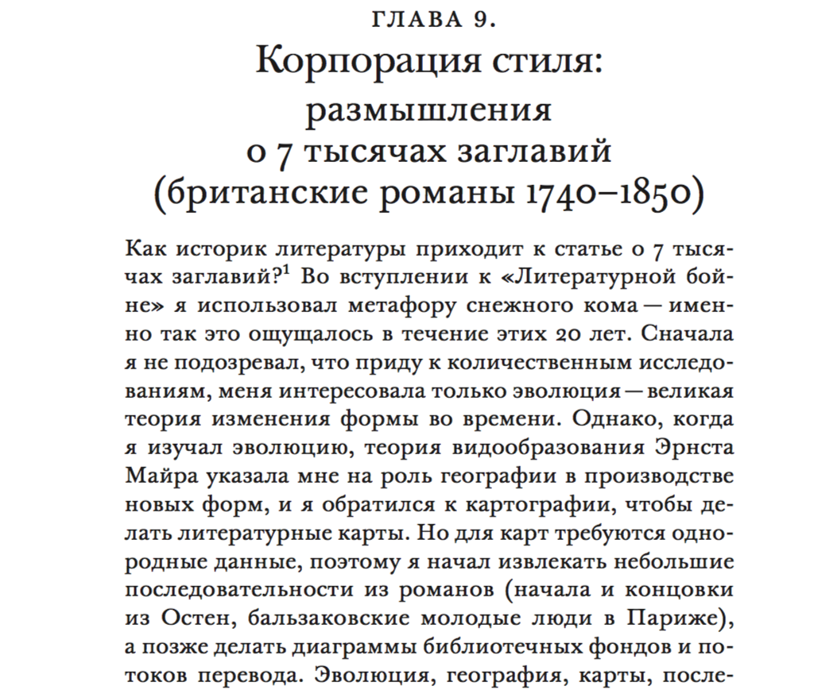–ñ–µ–Ω—â–∏–Ω—ã –≤ –∑–∞–≥–ª–∞–≤–∏—è—Ö –æ–±—Ä–µ—Ç–∞—é—Ç —Ñ–∞–º–∏–ª–∏–∏
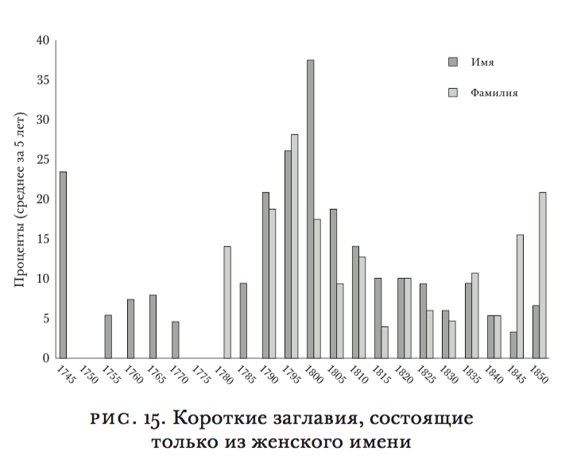¬´<...>–≥–µ—Ä–æ–∏–Ω—è –ø—Ä–∏–æ–±—Ä–µ—Ç–∞–ª–∞ –æ–±—â–µ—Å—Ç–≤–µ–Ω–Ω–æ–µ –ø–æ–ª–æ–∂–µ–Ω–∏–µ, —Å—Ä–∞–∑—É –æ—Ç—Ä–∞–∂–∞—é—â–µ–µ—Å—è –≤ –Ω–∞–∑–≤–∞–Ω–∏—è—Ö –≤—Ä–æ–¥–µ ¬´–î–∂–µ–∏ÃÜ–Ω –≠–∏ÃܗĬª –∏–ª–∏ ¬´–ú—ç—Ä–∏ –ë–∞—Ä—Ç–æ–Ω¬ª. –û–±—Ä–∞—Ç–∏—Ç–µ –≤–Ω–∏–º–∞–Ω–∏–µ, –∫–∞–∫ –º–Ω–æ–≥–æ –º–æ–∂–µ—Ç –±—ã—Ç—å —Å–¥–µ–ª–∞–Ω–æ –≤ –∫–æ—Ä–æ—Ç–∫–∏—Ö –∑–∞–≥–ª–∞–≤–∏—è—Ö –±–ª–∞–≥–æ–¥–∞—Ä—è –Ω–µ–±–æ–ª—å—à–∏–º –≤–∞—Ä–∏–∞—Ü–∏—è–º: –æ–¥–Ω–æ —Å–ª–æ–≤–æ ‚Äî –∏ –æ–±—Ä–∞–∑ –≥–µ—Ä–æ–∏–Ω–∏ –ø–µ—Ä–µ–≤–æ—Ä–∞—á–∏–≤–∞–µ—Ç—Å—è –Ω–∞ 180 –≥—Ä–∞–¥—É—Å–æ–≤: –æ—Ç —á–∞—Å—Ç–Ω–æ–≥–æ –∫ –ø—É–±–ª–∏—á–Ω–æ–º—É. –ö–æ—Ä–æ—Ç–∫–∏–µ –Ω–∞–∑–≤–∞–Ω–∏—è –±—ã–ª–∏ –æ–≥—Ä–∞–Ω–∏—á–µ–Ω–∏–µ–º, –Ω–∞–≤—è–∑–∞–Ω–Ω—ã–º —Ä—ã–Ω–∫–æ–º, –¥–∞, –Ω–æ –æ–≥—Ä–∞–Ω–∏—á–µ–Ω–∏–µ –º–æ–≥–ª–æ —Ç–∞–∫–∂–µ —Å—Ç–∞—Ç—å –∑–∞–º–µ—á–∞—Ç–µ–ª—å–Ω–æ–∏ÃÜ –≤–æ–∑–º–æ–∂–Ω–æ—Å—Ç—å—é –¥–ª—è –ª–∏—Ç–µ—Ä–∞—Ç—É—Ä–Ω–æ–≥–æ –≤–æ–æ–±—Ä–∞–∂–µ–Ω–∏—è: –∏—Å–∫—É—Å—Å—Ç–≤–æ –Ω–∞–º–µ–∫–∞, —Å–∂–∞—Ç–æ—Å—Ç–∏ ‚Äî –≤ –∫–æ–Ω—Ü–µ –∫–æ–Ω—Ü–æ–≤ –∑–∞–≥–ª–∞–≤–∏–µ —Å—Ç–∞–Ω–æ–≤–∏–ª–æ—Å—å —Ç—Ä–æ–ø–æ–º¬ª.
Пример «Distant Reading»: меньше морализма, больше экшена
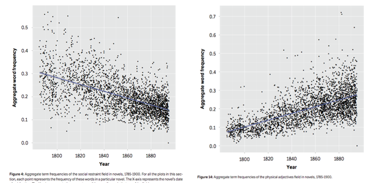Пример «Distant Reading»: затихание романа

–ö—Å—Ç–∞—Ç–∏, –Ω–µ –æ–±—è–∑–∞—Ç–µ–ª—å–Ω–æ –¥–µ–ª–∞—Ç—å Distant Reading –ø—Ä–æ—Ñ–µ—Å—Å–∏–æ–Ω–∞–ª—å–Ω–æ–π –ª–∏—Ç–µ—Ä–∞—Ç—É—Ä—ã
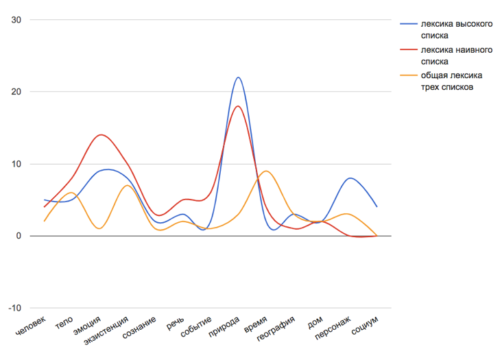Пример «Culturomics» в Google Books
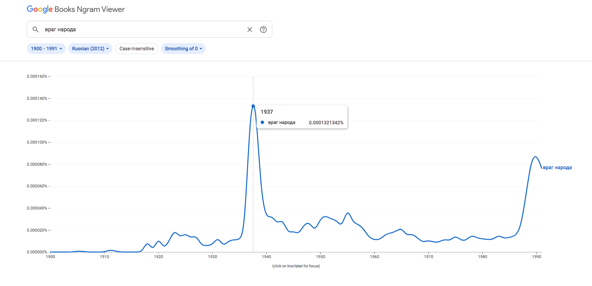Google Books & Culturomics
'We constructed a corpus of digitized texts containing about 4% of all books ever printed. Analysis of this corpus enables us to investigate cultural trends quantitatively
. We survey the vast terrain of “culturomics”, focusing on linguistic and cultural phenomena <...>'Пример «Culturomics» в Google Books
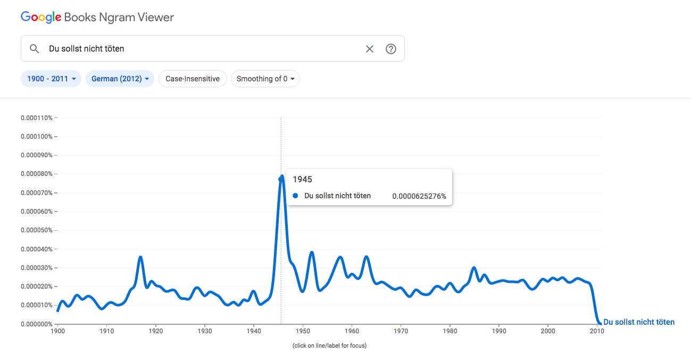Пример «Culturomics»: темы в дневнике
- –ú–∞—Ä—Ç–∞ –ë–∞–ª–ª–∞—Ä–¥, –∞–∫—É—à–µ—Ä–∫–∞ –∏–∑ —à—Ç–∞—Ç–∞ –ú—ç–Ω, –≤–µ–ª–∞ –¥–Ω–µ–≤–Ω–∏–∫ —Å 1785 –ø–æ 1812 –≥–æ–¥
- –ó–∞ —ç—Ç–æ –≤—Ä–µ–º—è –æ–Ω–∞ –ø—Ä–∏–Ω—è–ª–∞ 816 —Ä–æ–¥–æ–≤ –∏ —Å–¥–µ–ª–∞–ª–∞ –æ–∫–æ–ª–æ 10000 –∑–∞–ø–∏—Å–µ–π –≤ –¥–Ω–µ–≤–Ω–∏–∫–µ
- –ò—Å—Ç–æ—Ä–∏–∫ –ö—ç–º–µ—Ä–æ–Ω –ë–ª–µ–≤–∏–Ω—Å –∏—Å—Å–ª–µ–¥–æ–≤–∞–ª –¥–Ω–µ–≤–Ω–∏–∫ –∫–æ–ª–∏—á–µ—Å—Ç–≤–µ–Ω–Ω—ã–º–∏ –º–µ—Ç–æ–¥–∞–º–∏
–í —Ç.—á. —Å –ø–æ–º–æ—â—å—é —Ç–µ–º–∞—Ç–∏—á–µ—Å–∫–æ–≥–æ –º–æ–¥–µ–ª–∏—Ä–æ–≤–∞–Ω–∏—è
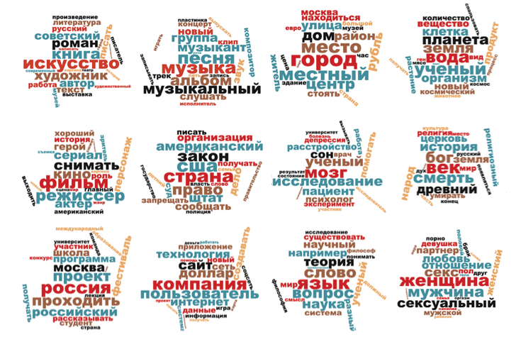–¢–µ–º—ã –≤ –¥–Ω–µ–≤–Ω–∏–∫–µ
- MIDWIFERY: birth deld safe morn receivd calld left cleverly pm labour fine reward arivd infant expected recd shee born patient
- CHURCH: meeting attended afternoon reverend worship foren mr famely performd vers attend public supper st service lecture discoarst administred supt
- DEATH: day yesterday informd morn years death ye hear expired expird weak dead las past heard days drowned departed evinn
- GARDENING: gardin sett worked clear beens corn warm planted matters cucumbers gatherd potatoes plants ou sowd door squash wed seeds
- SHOPPING: lb made brot bot tea butter sugar carried oz chees pork candles wheat store pr beef spirit churnd flower
- ILLNESS: unwell mr sick gave dr rainy easier care head neighbor feet relief made throat poorly takeing medisin ts stomach
–ö–∞–∫ –¥—É–º–∞–µ—Ç–µ, —á—Ç–æ –∑–∞ —Ç–µ–º–∞?

"Cold weather"
–∫–∞–∫ –¥—É–º–∞–µ—Ç–µ, —á—Ç–æ –∑–∞ —Ç–µ–º–∞?
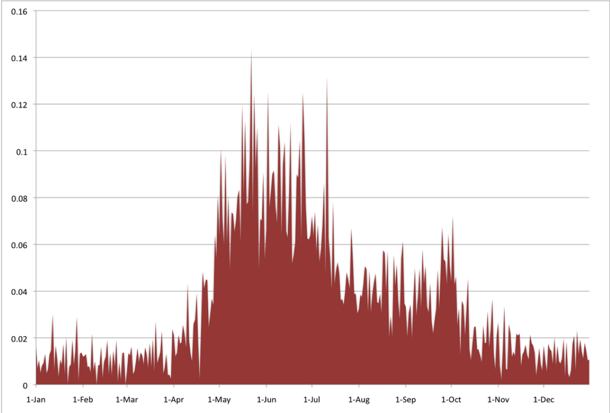"Gardening"
–ö—Å—Ç–∞—Ç–∏ –æ –¥–Ω–µ–≤–Ω–∏–∫–∞—Ö
–ü–æ–ø—ã—Ç–∫–∞ –∞–Ω–∞–ª–∏–∑–∞ —Ç–æ–Ω–∞–ª—å–Ω–æ—Å—Ç–∏ –∫–æ—Ä–ø—É—Å–∞ "–ü—Ä–æ–∂–∏—Ç–æ"
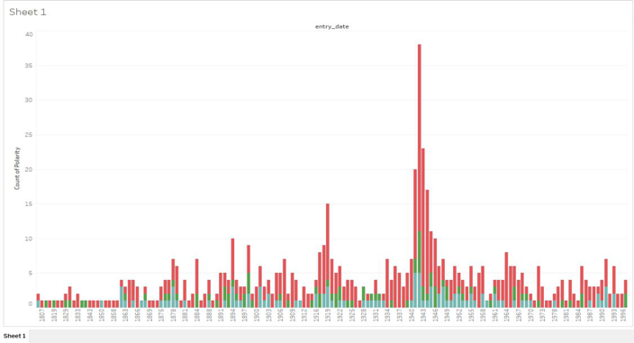–ò—Å—Å–ª–µ–¥–æ–≤–∞–Ω–∏–µ —Å—Ç–µ–Ω–æ–≥—Ä–∞–º–º –ø–µ—Ä–≤–æ–≥–æ –ø–∞—Ä–ª–∞–º–µ–Ω—Ç–∞ —Ä–µ–≤–æ–ª—é—Ü–∏–æ–Ω–Ω–æ–π –§—Ä–∞–Ω—Ü–∏–∏
- Barron A.T.J. et al. Individuals, institutions, and innovation in the debates of the French Revolution (2018)
- 45 —Ç—ã—Å. —Å—Ç–µ–Ω–æ–≥—Ä–∞–º–º —Ñ—Ä–∞–Ω—Ü—É–∑—Å–∫–æ–≥–æ –ø–∞—Ä–ª–∞–º–µ–Ω—Ç–∞ (French Revolution Digital Archive)
- –ß–µ—Ä–µ–∑ —Ç–µ–º–∞—Ç–∏—á–µ—Å–∫–æ–µ –º–æ–¥–µ–ª–∏—Ä–æ–≤–∞–Ω–∏–µ...
- ...–∫ –¥–∏–Ω–∞–º–∏–∫–µ –ø–∞—Ä–ª–∞–º–µ–Ω—Ç—Å–∫–æ–π –¥–∏—Å–∫—É—Å—Å–∏–∏
–ù–æ–≤–∏–∑–Ω–∞ –∏ –Ω–µ–¥–æ–ª–≥–æ–≤–µ—á–Ω–æ—Å—Ç—å (–ø—Ä–µ—Ö–æ–¥—è—â–µ—Å—Ç—å) —Ä–µ—á–µ–π:
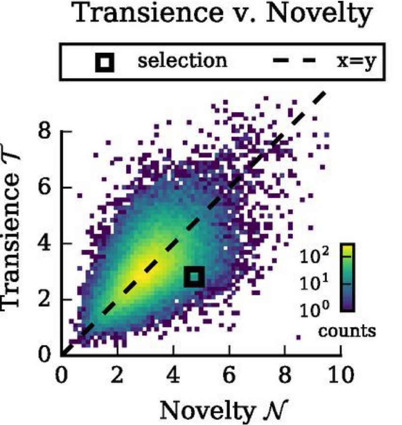–ú–µ—Ç—Ä–∏–∫–∞ —Ä–µ–∑–æ–Ω–∞–Ω—Å–∞ –∏ novelty bias:
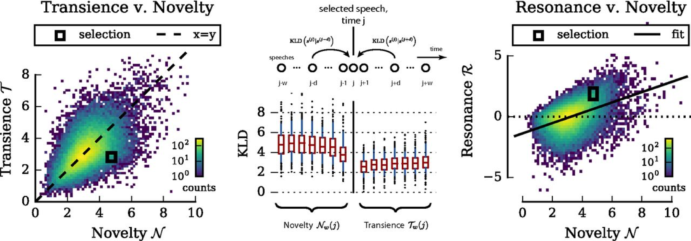Cultural Analytics: –ø–æ–ø—É–ª—è—Ä–Ω–æ—Å—Ç—å vs –ø—Ä–µ—Å—Ç–∏–∂
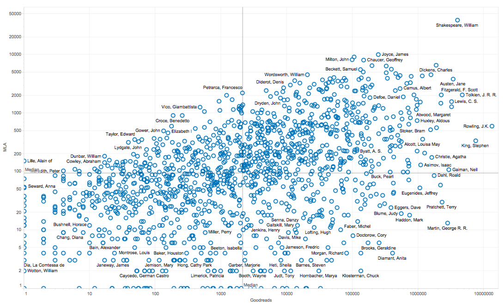–ù–µ —Ç–æ–ª—å–∫–æ —Ç–µ–∫—Å—Ç—ã
Cultural Analytics: —ç–≤–æ–ª—é—Ü–∏—è –ª–µ—Ç–Ω–∏—Ö —Ö–∏—Ç–æ–≤
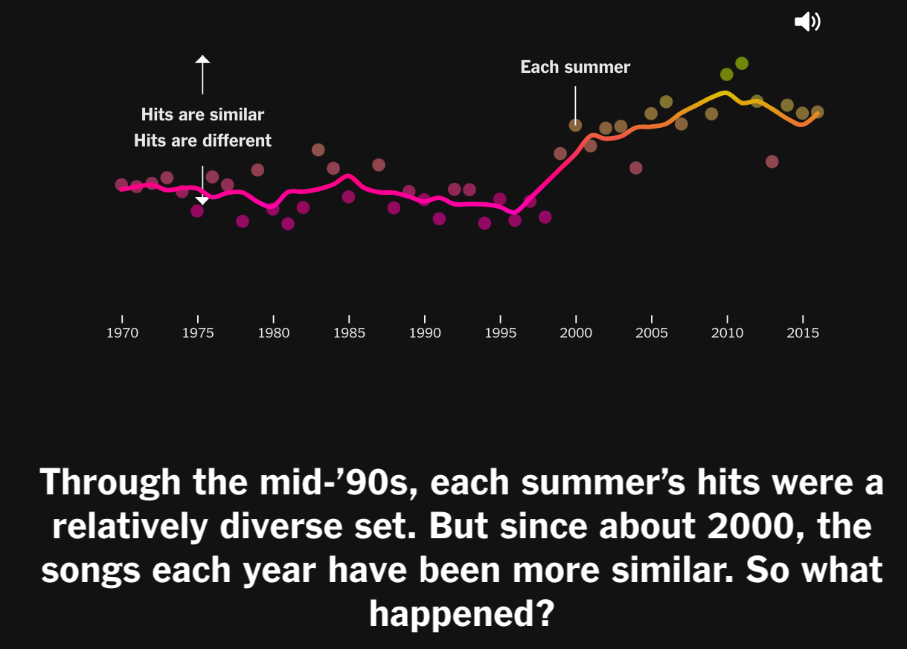Visual Analytics: 137 —Ç—ã—Å. –∫–∞—Ä—Ç–∏–Ω —Å WikiArt
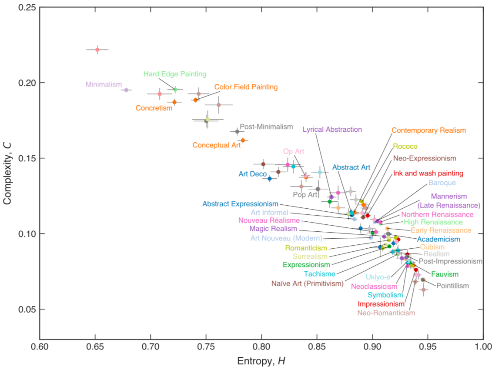–ú–µ—Ä—ã —ç–Ω—Ç—Ä–æ–ø–∏–∏ –∏ —Å–ª–æ–∂–Ω–æ—Å—Ç–∏

137 —Ç—ã—Å. –∫–∞—Ä—Ç–∏–Ω —Å WikiArt

137 —Ç—ã—Å. –∫–∞—Ä—Ç–∏–Ω —Å WikiArt
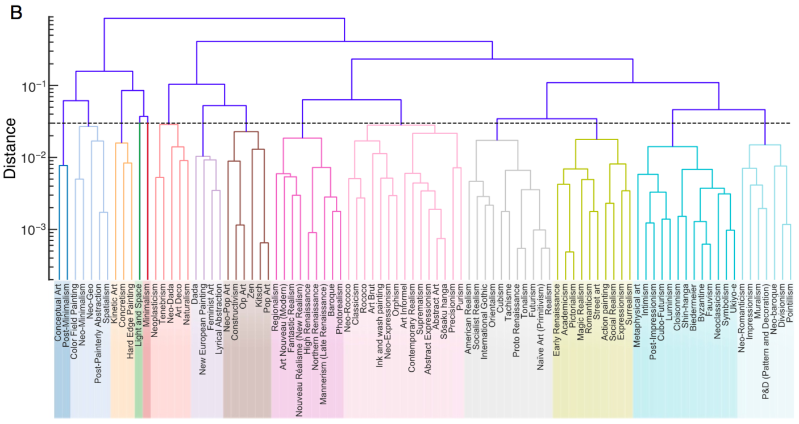Distant Viewing: –¥–ª–∏–Ω–∞ –∏ –¥–∏–Ω–∞–º–∏—á–Ω–æ—Å—Ç—å –∫–∞–¥—Ä–∞
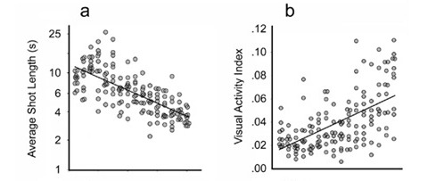Distant Viewing: –æ—Å–≤–µ—â–µ–Ω–Ω–æ—Å—Ç—å –∫–∞–¥—Ä–∞
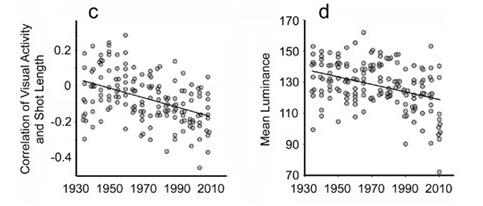–ö—Å—Ç–∞—Ç–∏, –∏ –∫–∏–Ω–æ–ø–æ—Å—Ç–µ—Ä—ã —Ç–æ–∂–µ —Ç–µ–º–Ω–µ—é—Ç (–µ—â–µ –Ω–µ–º–Ω–æ–≥–æ Cultural Analytics)
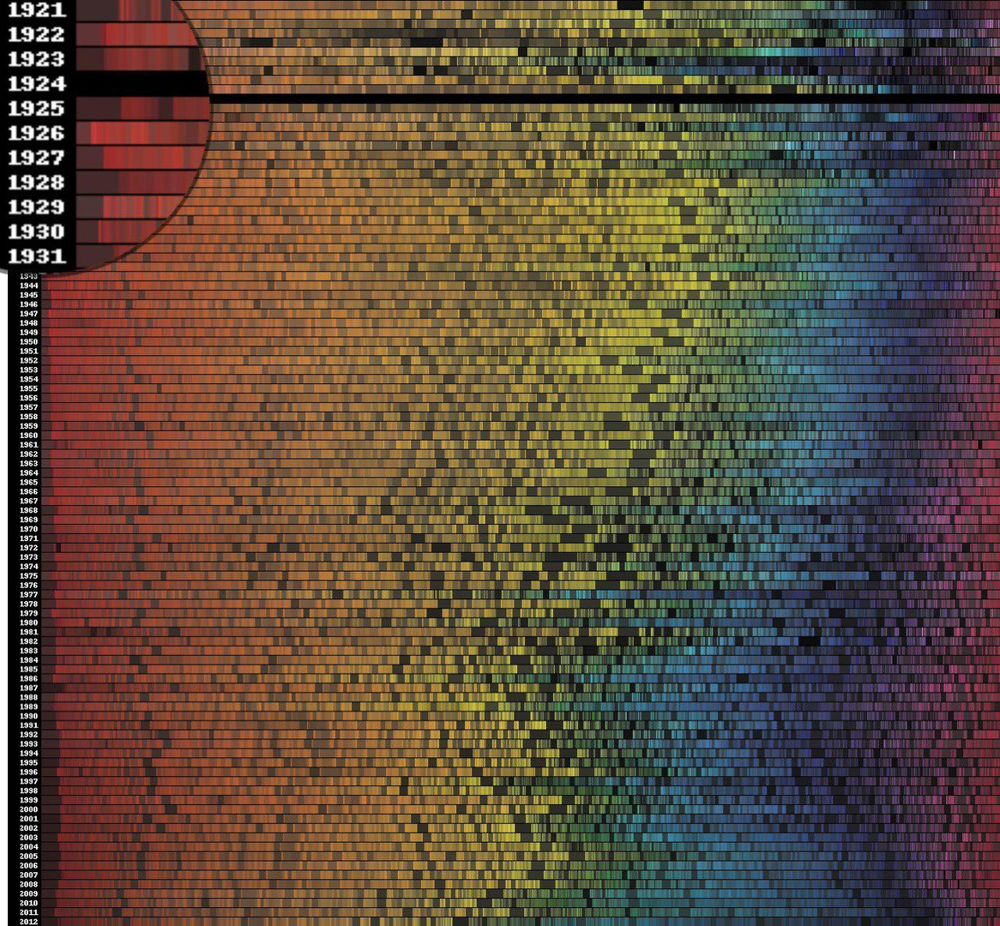"–ú–æ–¥–µ–ª–∏—Ä–æ–≤–∞–Ω–∏–µ" –≤ Humanities
3D-–º–æ–¥–µ–ª–∏—Ä–æ–≤–∞–Ω–∏–µ –∫–∞–∫ –∏–Ω—Å—Ç—Ä—É–º–µ–Ω—Ç —ç–ø–∏–≥—Ä–∞—Ñ–∏—Å—Ç–∞
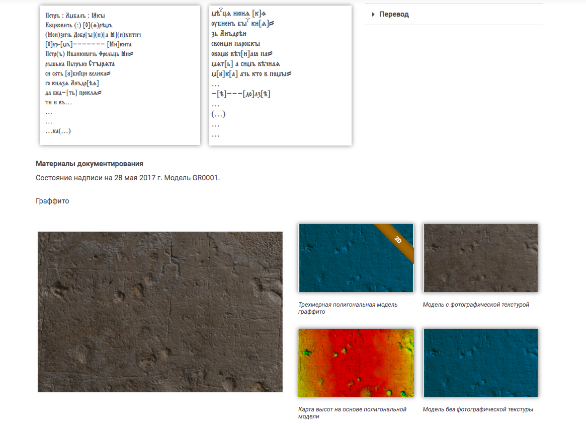 –ü—Ä–æ–µ–∫—Ç—ã –ª–∞–±–æ—Ä–∞—Ç–æ—Ä–∏–∏ RSSDA3D-–º–æ–¥–µ–ª–∏—Ä–æ–≤–∞–Ω–∏–µ –∫–∞–∫ –∏–Ω—Å—Ç—Ä—É–º–µ–Ω—Ç —ç–ø–∏–≥—Ä–∞—Ñ–∏—Å—Ç–∞
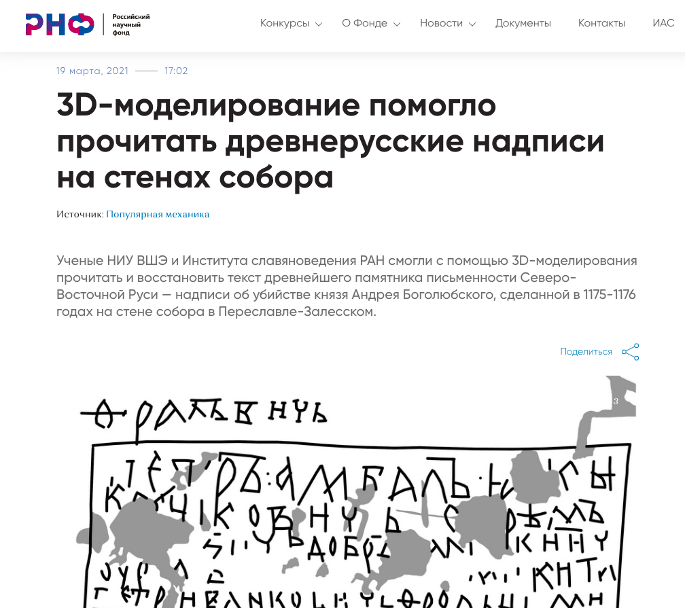 3D-–º–æ–¥–µ–ª–∏—Ä–æ–≤–∞–Ω–∏–µ –ø–æ–º–æ–≥–ª–æ –ø—Ä–æ—á–∏—Ç–∞—Ç—å –¥—Ä–µ–≤–Ω–µ—Ä—É—Å—Å–∫–∏–µ –Ω–∞–¥–ø–∏—Å–∏ –Ω–∞ —Å—Ç–µ–Ω–∞—Ö —Å–æ–±–æ—Ä–∞–°—Ç–∏–ª–æ–º–µ—Ç—Ä–∏—è
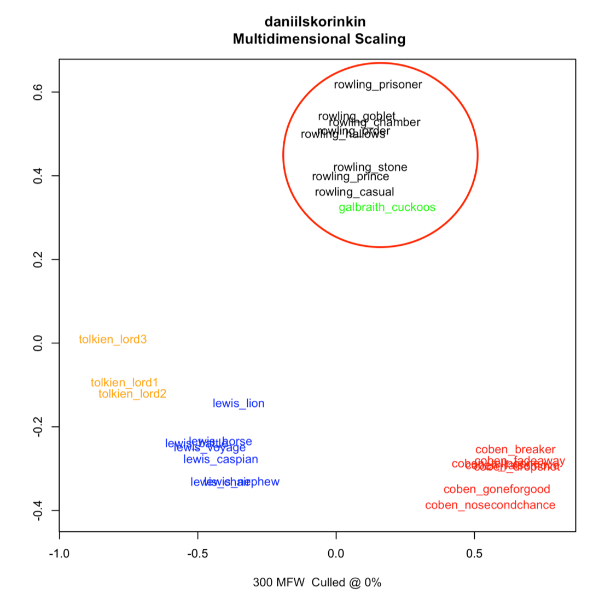–ì–æ–ª–æ—Å–∞ –≤ —Ä–æ–º–∞–Ω–µ "–ò–¥–∏–æ—Ç"
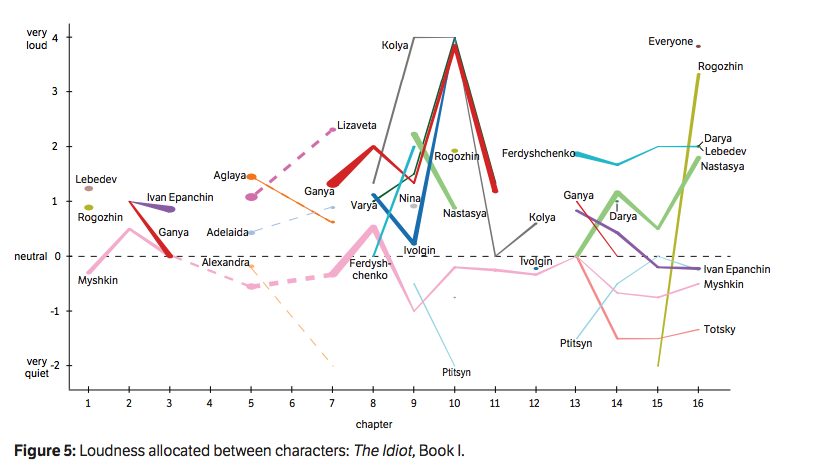–°–µ—Ç–µ–≤–æ–π –∞–Ω–∞–ª–∏–∑
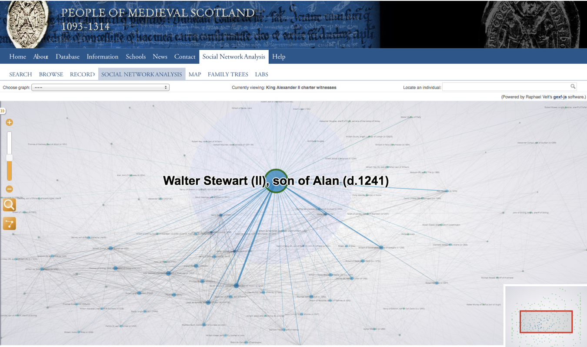–°–µ—Ç–µ–≤–æ–π –∞–Ω–∞–ª–∏–∑

(–∏–∑ –º–æ–µ–π –¥–∏—Å—Å–µ—Ä—Ç–∞—Ü–∏–∏)
–°–µ—Ç–µ–≤–æ–π –∞–Ω–∞–ª–∏–∑
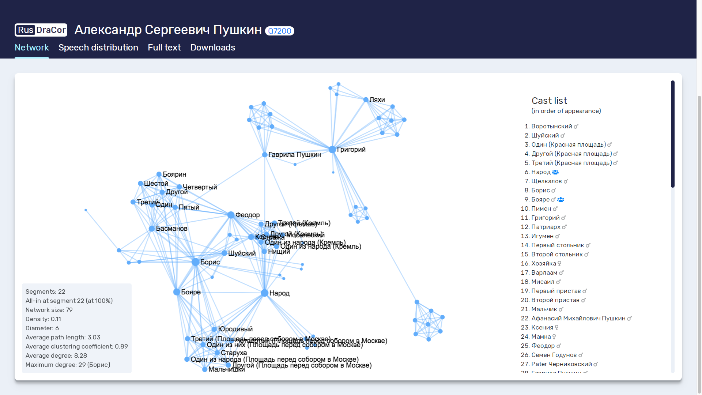–°–µ—Ç—å (–≥—Ä–∞—Ñ)

—Å–æ—Å—Ç–æ–∏—Ç –∏–∑ —É–∑–ª–æ–≤...

...–∏ —Ä–µ–±–µ—Ä

–ß–µ–º —Ö–æ—Ä–æ—à–∞ —Å–µ—Ç—å (–≥—Ä–∞—Ñ) –∫–∞–∫ –º–æ–¥–µ–ª—å?
- –£–Ω–∏–≤–µ—Ä—Å–∞–ª—å–Ω–æ—Å—Ç—å –ø—Ä–∏–º–µ–Ω–µ–Ω–∏—è
- –ù–∞–≥–ª—è–¥–Ω–æ—Å—Ç—å: –º–Ω–æ–≥–æ–µ –≤–∏–¥–Ω–æ –≥–ª–∞–∑–∞–º–∏ –±–µ–∑ –ø–æ–¥—Å—á–µ—Ç–æ–≤ –∏ –∏–Ω—Ç—É–∏—Ç–∏–≤–Ω–æ –ø–æ–Ω—è—Ç–Ω–æ
- Объективность: за этим «видно глазами» всегда стоят цифры
–ù–∞–ø—Ä–∏–º–µ—Ä, —Ü–µ–Ω—Ç—Ä–∞–ª—å–Ω–æ—Å—Ç–∏ –≤ —Å–µ—Ç—è—Ö

| –£–∑–µ–ª | –¶–µ–Ω—Ç—Ä–∞–ª—å–Ω–æ—Å—Ç—å (—Å—Ç–µ–ø–µ–Ω—å, degree) |
|---|---|
| –î–∞–Ω—è | 5 |
| –¢–∞–Ω—è | 1 |
| –í–∞–Ω—è | 1 |
| –ù–∞—Ñ–∞–Ω—è | 1 |
| –î—É–Ω—è | 1 |
–í–∏–∑—É–∞–ª–∏–∑–∞—Ü–∏—è

–¶–µ–Ω—Ç—Ä–∞–ª—å–Ω–æ—Å—Ç—å –ø–æ –ø–æ—Å—Ä–µ–¥–Ω–∏—á–µ—Å—Ç–≤—É (betweenness centrality)

–¶–µ–Ω—Ç—Ä–∞–ª—å–Ω–æ—Å—Ç—å –ø–æ –ø–æ—Å—Ä–µ–¥–Ω–∏—á–µ—Å—Ç–≤—É (betweenness centrality)

–°–æ—Ü–∏–∞–ª—å–Ω–∞—è —Å–µ—Ç—å –ø—å–µ—Å—ã –ê.–°. –ü—É—à–∫–∏–Ω–∞ "–ë–æ—Ä–∏—Å –ì–æ–¥—É–Ω–æ–≤"

–ü—É—à–∫–∏–Ω –Ω–∞ –ø–æ—Å—ã–ª–∫–∞—Ö

–ï—Å—Ç—å –ª–∏ –¥—Ä—É–≥–∏–µ —Ç–∞–∫–∏–µ –∂–µ?
Битяговский в «Смерти Иоанна Грозного» А. К. Толстого (двойной агент)
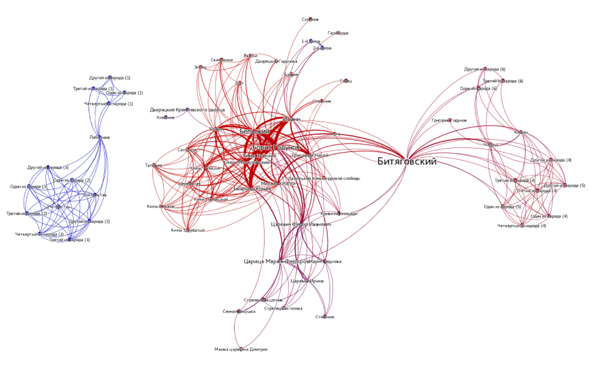Калачник в «Дмитрие Самозванце» А.Н. Островского (шпион/агент Шуйского)

–ù–µ–º–Ω–æ–≥–æ –æ –ö–∞–ª–∞—á–Ω–∏–∫–µ
–ö–∞–ª–∞—á–Ω–∏–∫:–ß—Ç–æ —è-—Ç–æ?! –Ø –Ω–µ —Å—ã—â–∏–∫, –Ω–µ –¥–æ–Ω–æ—Å—á–∏–∫;
Я — весь народ московский; вот кто я!
–ù–µ–º–Ω–æ–≥–æ –æ –ö–∞–ª–∞—á–Ω–∏–∫–µ
«Довольно загадочной кажется фигура Калачника, темпераментно сыгранного Антоном Хомятовым: с одной стороны, это человек из народа — поборник православной веры, мститель за брата, с другой — «человек в штатском», тайный агент Шуйского, провокатор и шпион. Похоже на то, что его торговля калачами только «прикрытие». Один раз за весь спектакль мы видим лоток на его плече, да и то пустой. Калачник называет себя «народом», но он, пожалуй, ох как непрост?»
–ë–∏—Ç–∫–æ–≤ (—Å–æ–≥–ª—è–¥–∞—Ç–∞–π/–¥–≤–æ–π–Ω–∏–∫ –ü—É—à–∫–∏–Ω–∞)

–¢–æ –∂–µ —Å–∞–º–æ–µ –¥–µ–ª–∞—é—Ç –∏—Å—Ç–æ—Ä–∏–∫–∏:

Metadata, Surveillance and the Tudor State
- Государственные архивы («State Papers»)
- –î–ª—è –ø–æ—Å—Ç—Ä–æ–µ–Ω–∏—è —Å–µ—Ç–µ–π –∏—Å–ø–æ–ª—å–∑—É–µ—Ç—Å—è –ø–∏—Å—å–º–µ–Ω–Ω–∞—è –∫–æ—Ä—Ä–µ—Å–ø–æ–Ω–¥–µ–Ω—Ü–∏—è —ç–ø–æ—Ö–∏ –¢—é–¥–æ—Ä–æ–≤
-
–í—Å–µ–≥–æ:
- 132 747 –ø–∏—Å–µ–º
- 37 101 —É–Ω–∏–∫–∞–ª—å–Ω—ã—Ö –∏–º–µ–Ω –∫–æ—Ä—Ä–µ—Å–ø–æ–Ω–¥–µ–Ω—Ç–æ–≤
- 20,656 –Ω–∞—Å—Ç–æ—è—â–∏—Ö –∫–æ—Ä—Ä–µ—Å–ø–æ–Ω–¥–µ–Ω—Ç–æ–≤ –ø–æ—Å–ª–µ —Å–∫–ª–µ–∏–≤–∞–Ω–∏—è –¥—É–±–ª–µ–π
–°—Ä–∞–≤–Ω–µ–Ω–∏–µ degree –∏ betweenness

–ü—Ä–æ–º–µ–∂—É—Ç–æ—á–Ω–æ—Å—Ç—å –∫–∞–∫ –ø–æ–∫–∞–∑–∞—Ç–µ–ª—å –¥–≤—É–ª–∏—á–Ω–æ—Å—Ç–∏

2. –°—Ç—Ä—É–∫—Ç—É—Ä–∞ —Å–æ–æ–±—â–µ—Å—Ç–≤ –≤ —Å–µ—Ç—è—Ö

–î–∞–∂–µ –º–æ—è –ª–∏—á–Ω–∞—è —Å–æ—Ü—Å–µ—Ç—å —Ö–æ—Ä–æ—à–æ —Å—Ç—Ä—É–∫—Ç—É—Ä–∏—Ä—É–µ—Ç—Å—è
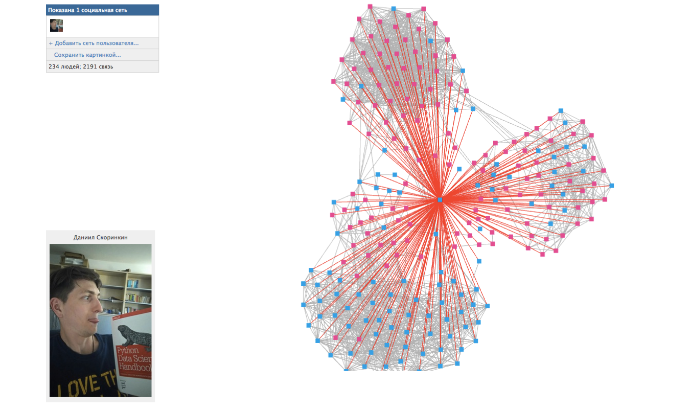–≠—Ç–æ –¥–∞–µ—Ç –≤—ã—Ö–æ–¥ –æ–±—Ä–∞—Ç–Ω–æ –Ω–∞ –º–∞—Å—à—Ç–∞–±–∏—Ä–æ–≤–∞–Ω–∏–µ

–ò–∑–Ω–∞—á–∞–ª—å–Ω–æ –Ω–∞—Å –≤–¥–æ—Ö–Ω–æ–≤–∏–ª –ø—Ä–∏–º–µ—Ä –Ω–µ–º–µ—Ü–∫–∏—Ö –∫–æ–ª–ª–µ–≥:

–•–æ—Ä–æ–≤–æ–¥ –ê. –®–Ω–∏—Ü–ª–µ—Ä–∞:
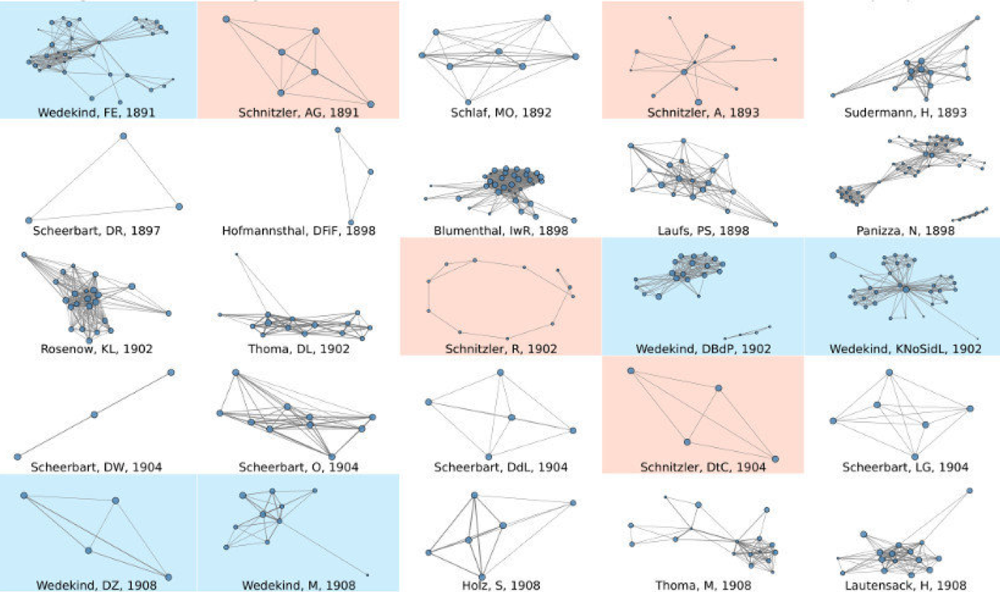–ì—ë—Ü —Ñ–æ–Ω –ë–µ—Ä–ª–∏—Ö–∏–Ω–≥–µ–Ω –ò.–í. –ì—ë—Ç–µ:

–ì—ë—Ç–µ –∏ –®–µ–∫—Å–ø–∏—Ä


–ê –µ—Å–ª–∏ —Å–º–æ—Ç—Ä–µ—Ç—å –Ω–∞ —Ä—É—Å—Å–∫–æ–º –º–∞—Ç–µ—Ä–∏–∞–ª–µ...
... —Ç–æ —ç—Ç–æ –∫–∞–∫ —Ä–∞–∑ –ë–æ—Ä–∏—Å –ì–æ–¥—É–Ω–æ–≤

–ë–æ—Ä–∏—Å –ì–æ–¥—É–Ω–æ–≤ —Å—Ç—Ä—É–∫—Ç—É—Ä–Ω–æ —É—Å—Ç—Ä–æ–µ–Ω –ø–æ-—à–µ–∫—Å–ø–∏—Ä–æ–≤—Å–∫–∏

"Не смущаемый никаким иным влиянием, Шекспиру я подражал в его вольном и широком изображении характеров, в небрежном и простом составлении планов…"
"–¢–≤–µ—Ä–¥–æ —É–≤–µ—Ä–µ–Ω–Ω—ã–π, —á—Ç–æ —É—Å—Ç–∞—Ä–µ–ª—ã–µ —Ñ–æ—Ä–º—ã –Ω–∞—à–µ–≥–æ —Ç–µ–∞—Ç—Ä–∞ —Ç—Ä–µ–±—É—é—Ç –ø—Ä–µ–æ–±—Ä–∞–∑–æ–≤–∞–Ω–∏—è, —è —Ä–∞—Å–ø–æ–ª–æ–∂–∏–ª —Å–≤–æ—é —Ç—Ä–∞–≥–µ–¥–∏—é –ø–æ —Å–∏—Å—Ç–µ–º–µ –û—Ç—Ü–∞ –Ω–∞—à–µ–≥–æ –®–µ–∫—Å–ø–∏—Ä–∞, –∏ –ø—Ä–∏–Ω–µ—Å –µ–º—É –≤ –∂–µ—Ä—Ç–≤—É –ø—Ä–µ–¥ –µ–≥–æ –∞–ª—Ç–∞—Ä—å –¥–≤–∞ –∫–ª–∞—Å—Å–∏—á–µ—Å–∫–∏–µ –µ–¥–∏–Ω—Å—Ç–≤–∞, –∏ –µ–¥–≤–∞ —Å–æ—Ö—Ä–∞–Ω–∏–ª –ø–æ—Å–ª–µ–¥–Ω–µ–µ".
–ö–ª–∞—Å—Å–∏—Ü–∏–∑–º vs –®–µ–∫—Å–ø–∏—Ä–æ–≤—Å–∫–∞—è –ø—å–µ—Å–∞:


Жанры пьес — и плотности сетей


–ü–ª–æ—Ç–Ω–æ—Å—Ç—å = 0.5 (3/6) –ü–ª–æ—Ç–Ω–æ—Å—Ç—å = 1 (6/6)
–ü–ª–æ—Ç–Ω–æ—Å—Ç–∏ –∫–æ–º–µ–¥–∏–∏ –∏ —Ç—Ä–∞–≥–µ–¥–∏–∏ –æ—Ç–ª–∏—á–∞—é—Ç—Å—è

–ü–ª–æ—Ç–Ω–æ—Å—Ç–∏ –∫–æ–º–µ–¥–∏–π –∏ –Ω–µ-–∫–æ–º–µ–¥–∏–π –≤ RusDraCor

–°–µ—Ç–∏ –º–æ–∂–Ω–æ —Å–æ—á–µ—Ç–∞—Ç—å —Å –∫–∞—Ä—Ç–∞–º–∏ (GIS)

–ü—Ä–æ–µ–∫—Ç Mapping the Republic of Letters
–í–∏–∑—É–∞–ª–∏–∑–∞—Ü–∏—è, —Ä–∞—Å–ø—Ä–æ—Å—Ç—Ä–∞–Ω–∏–µ–Ω–∏–µ, –ø–æ–ø—É–ª—è—Ä–∏–∑–∞—Ü–∏—è –≥—É–º–∞–Ω–∏—Ç–∞—Ä–Ω–æ–≥–æ –∑–Ω–∞–Ω–∏—è
- –í–∏—Ä—Ç—É–∞–ª—å–Ω–∞—è, –¥–æ–ø–æ–ª–Ω–µ–Ω–Ω–∞—è, —Å–º–µ—à–∞–Ω–Ω–∞—è —Ä–µ–∞–ª—å–Ω–æ—Å—Ç—å (–º—É–∑–µ–∏, –ø–µ–¥–∞–≥–æ–≥–∏–∫–∞)
- –¶–∏—Ñ—Ä–æ–≤—ã–µ –∏–∑–¥–∞–Ω–∏—è
- GIS –∫–∞–∫ –º–µ—Ç–æ–¥ –ø—Ä–µ–¥—Å—Ç–∞–≤–ª–µ–Ω–∏—è –∏—Å—Ç–æ—Ä–∏—á–µ—Å–∫–∏—Ö –∑–Ω–∞–Ω–∏–π
- –í—Å—è–∫–∞—è –≥—É–º–∞–Ω–∏—Ç–∞—Ä–Ω–∞—è –∏–Ω—Ñ–æ–≥—Ä–∞—Ñ–∏–∫–∞
–í–∏—Ä—Ç—É–∞–ª—å–Ω—ã–µ –º—É–∑–µ–∏
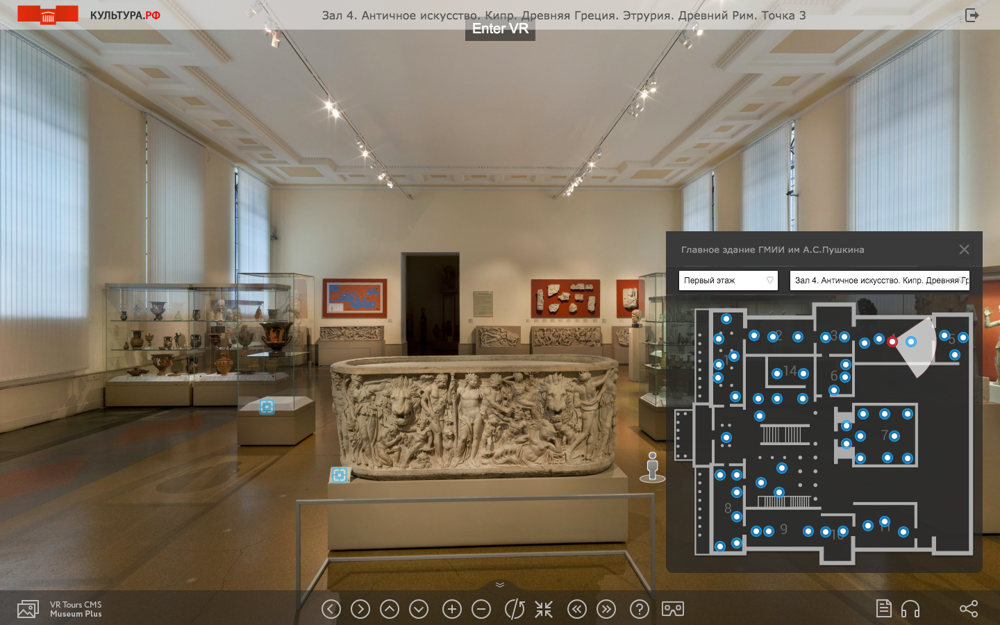–ú—É–∑–µ–∏ —Å –¥–æ–ø–æ–ª–Ω–µ–Ω–Ω–æ–π —Ä–µ–∞–ª—å–Ω–æ—Å—Ç—å—é

VR –≤ DH –Ω–∞—á–∞–ª–∏ –æ–±—Å—É–∂–¥–∞—Ç—å –Ω–∞ –∫–æ–Ω—Ñ–µ—Ä–µ–Ω—Ü–∏—è—Ö

–ì–µ–æ–∏–Ω—Ñ–æ—Ä–º–∞—Ç–∏–∫–∞ (GIS) –∏ –≥—É–º–∞–Ω–∏—Ç–∞—Ä–∏–∏
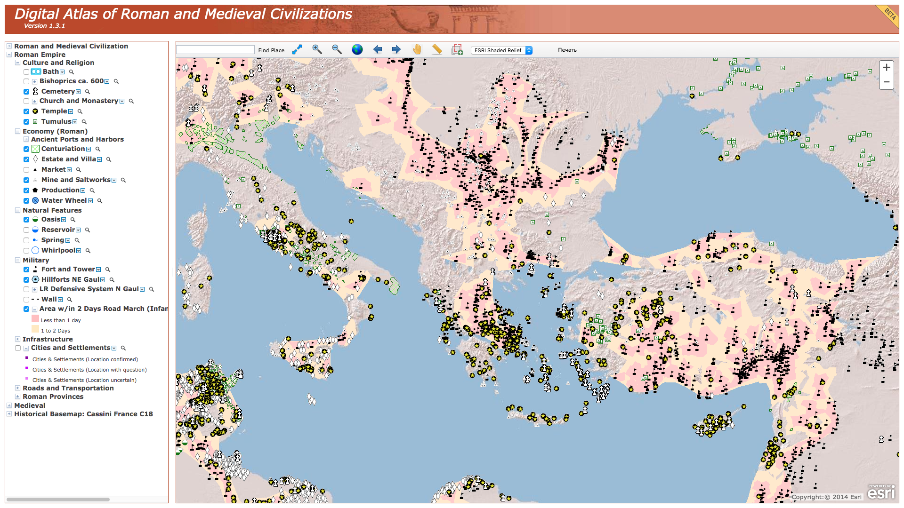The Digital Atlas of Roman and Medieval Civilizations
–ì–µ–æ–∏–Ω—Ñ–æ—Ä–º–∞—Ç–∏–∫–∞ (GIS) –∏ –≥—É–º–∞–Ω–∏—Ç–∞—Ä–∏–∏
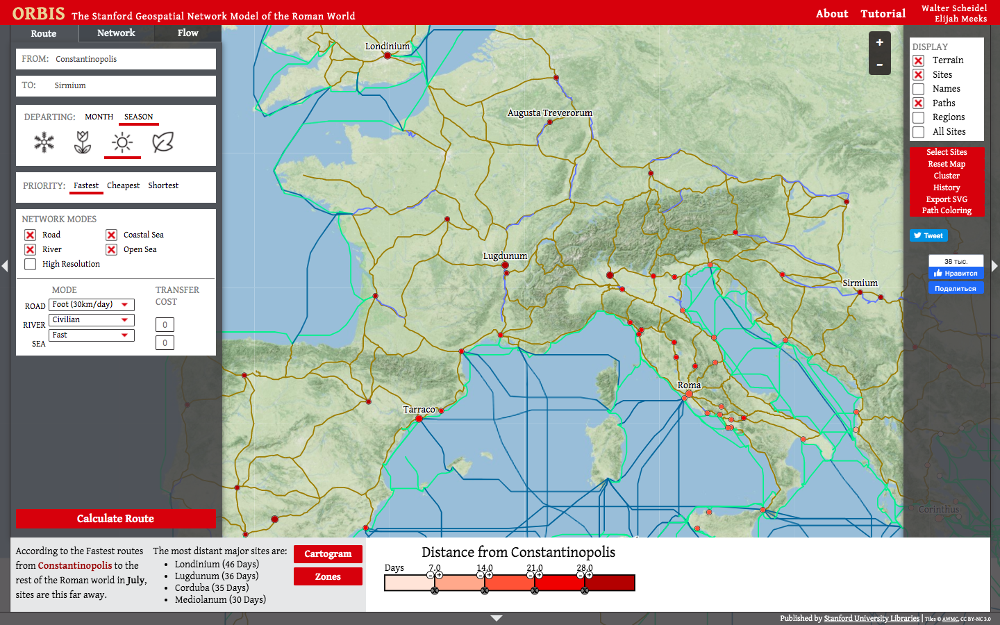ORBIS
GIS –∏ –≥—É–º–∞–Ω–∏—Ç–∞—Ä–∏–∏
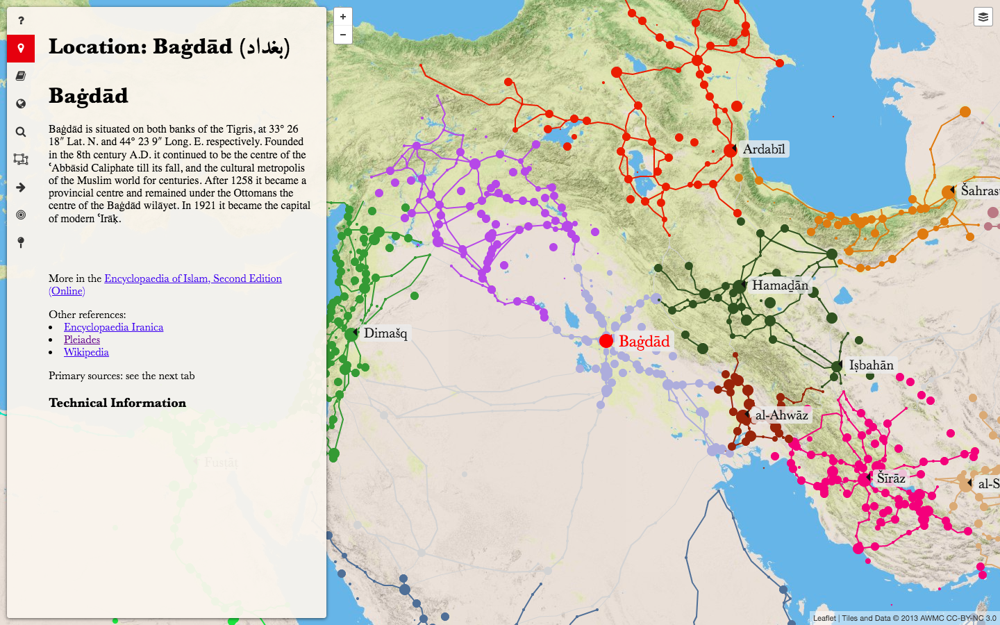GIS –∏ –≥—É–º–∞–Ω–∏—Ç–∞—Ä–∏–∏
GIS –∏ –≥—É–º–∞–Ω–∏—Ç–∞—Ä–∏–∏

–¶–∏—Ñ—Ä–æ–≤—ã–µ –∏–∑–¥–∞–Ω–∏—è

–¶–∏—Ñ—Ä–æ–≤—ã–µ –∏–∑–¥–∞–Ω–∏—è

–¶–∏—Ñ—Ä–æ–≤—ã–µ –∏–∑–¥–∞–Ω–∏—è

–ñ–∏–≤—ã–µ —Å—Ç—Ä–∞–Ω–∏—Ü—ã

–ñ–∏–≤—ã–µ —Å—Ç—Ä–∞–Ω–∏—Ü—ã
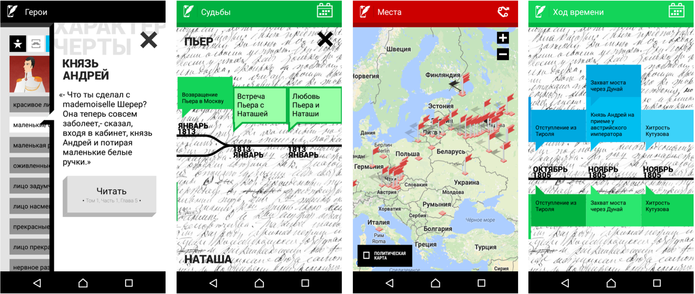–û—Ü–∏—Ñ—Ä–æ–≤–∫–∞ –∫—É–ª—å—Ç—É—Ä–Ω–æ–≥–æ –Ω–∞—Å–ª–µ–¥–∏—è
- –¶–∏—Ñ—Ä–æ–≤—ã–µ –∞—Ä—Ö–∏–≤—ã
- –§–æ—Ä–º–∞—Ç—ã –∏ —Å—Ç–∞–Ω–¥–∞—Ä—Ç—ã –ø—Ä–µ–¥—Å—Ç–∞–≤–ª–µ–Ω–∏—è –≥—É–º–∞–Ω–∏—Ç–∞—Ä–Ω—ã—Ö –¥–∞–Ω–Ω—ã—Ö –≤ –º–∞—à–∏–Ω–æ—á–∏—Ç–∞–µ–º–æ–º –≤–∏–¥–µ (TEI, –±–∞–∑—ã –¥–∞–Ω–Ω—ã—Ö, LOD)
- –ö—Ä–∞—É–¥—Å–æ—Ä—Å–∏–Ω–≥ –¥–ª—è –æ—Ü–∏—Ñ—Ä–æ–≤–∫–∏
- OCR (–æ–ø—Ç–∏—á–µ—Å–∫–æ–µ —Ä–∞—Å–ø–æ–∑–Ω–∞–≤–∞–Ω–∏–µ —Å–∏–º–≤–æ–ª–æ–≤)
- 3D-–º–æ–¥–µ–ª–∏ –∫—É–ª—å—Ç—É—Ä–Ω—ã—Ö –ø–∞–º—è—Ç–Ω–∏–∫–æ–≤
OCR (–æ–ø—Ç–∏—á–µ—Å–∫–æ–µ —Ä–∞—Å–ø–æ–∑–Ω–∞–≤–∞–Ω–∏–µ —Å–∏–º–≤–æ–ª–æ–≤)

–û—Ü–∏—Ñ—Ä–æ–≤–∫–∞ —Ä—É–∫–æ–ø–∏—Å–Ω–æ–≥–æ —Ç–µ–∫—Å—Ç–∞

–°–º. Transcribus
–ö—Ä–∞—É–¥—Å–æ—Ä—Å–∏–Ω–≥–æ–≤–∞—è –æ—Ü–∏—Ñ—Ä–æ–≤–∫–∞
'
–°—Ç–∞–Ω–¥–∞—Ä—Ç –º–∞—à–∏–Ω–æ—á–∏—Ç–∞–µ–º–æ–≥–æ —Ç–µ–∫—Å—Ç–∞ –≤ –≥—É–º–∞–Ω–∏—Ç–∞—Ä–Ω—ã—Ö –æ–±–ª–∞—Å—Ç—è—Ö

Text Encoding Initiative (TEI/XML)
–¶–∏—Ñ—Ä–æ–≤–∞—è –∫–æ–Ω—Å–µ—Ä–≤–∞—Ü–∏—è –≤ –∞—Ä—Ö–µ–æ–ª–æ–≥–∏–∏

3D-–º–æ–¥–µ–ª–∏—Ä–æ–≤–∞–Ω–∏–µ –æ–±—ä–µ–∫—Ç–æ–≤ –∫—É–ª—å—Ç—É—Ä–Ω–æ–≥–æ –Ω–∞—Å–ª–µ–¥–∏—è
–ò —Å–Ω–æ–≤–∞ –≤–∞—à–∞ –ª—é–±–∏–º–∞—è —Ü–∏—Ñ—Ä–æ–≤–∞—è —ç–ø–∏–≥—Ä–∞—Ñ–∏–∫–∞
–ù–∞–∫–æ–Ω–µ—Ü, –∏—Å—Å–ª–µ–¥–æ–≤–∞–Ω–∏—è —Ä–µ—Ü–µ–ø—Ü–∏–∏
–ß—Ç–æ —ç—Ç–æ?

–ê–π—Ç—Ä–µ–∫–µ—Ä
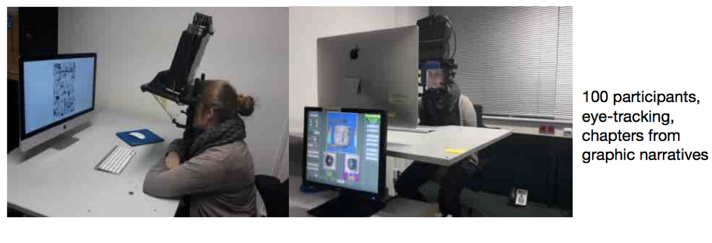

–ò—Å—Å–ª–µ–¥–æ–≤–∞–Ω–∏—è –æ—Ç–∑—ã–≤–æ–≤:

–õ–∞–π–∫–∏ –ø—Ä–æ—Ç–∏–≤ –Ω–∞—É—á–Ω—ã—Ö —Å—Ç–∞—Ç–µ–π:
–ò—Ç–æ–≥–æ: —Ü–µ–ª–∞—è –≤—Å–µ–ª–µ–Ω–Ω–∞—è –æ—á–µ–Ω—å —Ä–∞–∑–Ω—ã—Ö —à—Ç—É–∫... —É—Å–ª–æ–≤–Ω–æ –æ–±—ä–µ–¥–∏–Ω–µ–Ω–Ω—ã—Ö –ø—Ä–∏–º–µ–Ω–µ–Ω–∏–µ–º –∫–æ–º–ø—å—é—Ç–µ—Ä–∞
DH –∫–∞–∫ –≤—Ä–µ–º–µ–Ω–Ω—ã–π "–±–æ–ª—å—à–æ–π –∑–æ–Ω—Ç–∏–∫"
The phrase [digital humanities] has use-value to the degree that it can serve as an umbrella under which to group both people and projects seeking to reshape and reinvigorate contemporary arts and humanities practices, and expand their boundaries.
DH –∫–∞–∫ –≤—Ä–µ–º–µ–Ω–Ω—ã–π "–±–æ–ª—å—à–æ–π –∑–æ–Ω—Ç–∏–∫"
I think digital humanities, like social media, is an idea that will increasingly become invisible as new methods and platforms move from being widely used to being ubiquitous. For now, digital humanities defines the overlap between humanities research and digital tools. But the humanities are the study of cultural life, and our cultural life will soon be inextricably bound up with digital media.
DH –∫–∞–∫ –≤—Ä–µ–º–µ–Ω–Ω—ã–π "–±–æ–ª—å—à–æ–π –∑–æ–Ω—Ç–∏–∫"
A name that marks a moment of transition; the current name for humanities inquiry driven by or dependent on computers or digitally born objects of study; a temporary epithet for what will eventually be called merely Humanities.
–ê term of tactical convenience
–ù–æ –Ω–µ —Å—Ç–æ–∏—Ç –Ω–µ–¥–æ–æ—Ü–µ–Ω–∏–≤–∞—Ç—å convenience!

–¢–∏–ø–∏—á–Ω–∞—è –∫–æ–º–∞–Ω–¥–∞ DH-–ø—Ä–æ–µ–∫—Ç–∞: –º–∞—Ç–µ–º–∞—Ç–∏–∫–∏, —Ñ–∏–ª–æ–ª–æ–≥–∏, –ø—Ä–æ–≥—Ä–∞–º–º–∏—Å—Ç—ã, –ª–∏–Ω–≥–≤–∏—Å—Ç—ã, –ø—Ä–µ–ø–æ–¥—ã, –∏–Ω–∂–µ–Ω–µ—Ä—ã...
Никогда бы не собралась, если бы не было "зонтика DH" ☂️